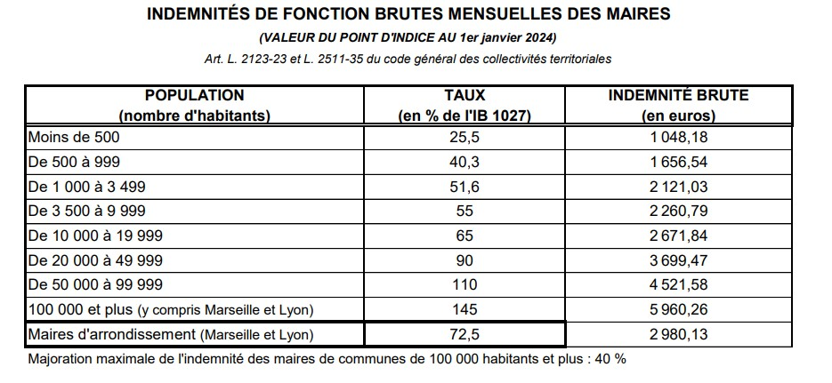

Vos Questions, Nos Réponses
Au fil de nos rencontres, vous nous interrogez. Nous vous répondons avec transparence.
Durant notre campagne, nous allons à votre rencontre pour échanger et vous écouter. Cette page rassemble les questions que vous nous posez et nos réponses détaillées. Elle sera mise à jour régulièrement au fil de nos échanges.
Vous dites que la commune a été en difficulté financière, et vous avez augmenté vos indemnités. Comment l’expliquez-vous?
Les indemnités de fonction des élus (maire et adjoints) ont été votées par le conseil municipal en 2020 selon les barèmes du CGCT (code général des collectivités territoriales) et n’ont pas été modifiées depuis.
En effet, le recensement de 2023 nous a placé dans les communes de plus de 1000 habitants, et nous aurions pu revoir les indemnités à la hausse. Nous avons choisi de ne pas demander cette revalorisation, gardant le taux des communes de 500 à 999 habitants.

Une extension des constructions au domaine des Bruyères est-elle prévue?
Aucune extension du domaine des Bruyères n’est prévue. La seule construction prévue est le béguinage au clos de la ferme (face à la boucherie).
Notre volonté est de préserver les espaces verts et agricoles afin de conserver un village sain et verdoyant, et d’éviter les désagréments d’une urbanisation massive, comme les problèmes d’écoulement des eaux par exemple. En ce sens, nous avons soutenu en 2020 le collectif d’habitants engagés pour la préservation de l’espace vert d’Agrestis, sur lequel était prévu un projet de béguinage lancé en 2017 et annulé juridiquement fin 2020. D'ailleurs cet espace vert fait le bonheur des habitants du village.
Des travaux ont été effectués dans la crèche, cela doit représenter un gros budget pour la commune?
Les travaux récemment réalisés dans la crèche municipale représentent en effet un investissement important, mais ils étaient à la fois nécessaires et anticipés. Il s’agissait avant tout de travaux de mise aux normes, d’amélioration du confort des enfants et du personnel, ainsi que de renforcement de l’isolation et de la performance énergétique du bâtiment. La modernisation de la crèche est désormais achevée, avec notamment la pose de la nouvelle porte d’entrée.
Cette démarche s’inscrit dans l’anticipation des nouvelles obligations qui entreront en vigueur au 1er septembre 2026 pour les établissements d’accueil du jeune enfant (EAJE), sous le contrôle de la PMI. Ces évolutions concernent plusieurs domaines essentiels : les locaux, la sécurité des enfants, les documents réglementaires, le règlement de fonctionnement, la gouvernance, ainsi que de nouvelles exigences en matière de performance énergétique et environnementale.
Afin d’être en conformité dans les délais, la commune a choisi de réaliser dès 2025: - réfection de la toiture - mise aux normes et installation d'une nouvelle VMC - installation d’un double visiophone - remplacement des portes intérieures (avec oculus et double système anti pince doigts) et des poignées à une certaine hauteur - pose de volets roulants - mise en place d’un nouvel éclairage LED - divers travaux intérieurs (plaquage, peinture) et remplacement de vaisselle plastique
💶 Le montant total des travaux s’élève à 119 478,58 € TTC. La CAF finance 80% du projet via le Fonds de modernisation des EAJE, ce qui laisse un reste à charge de 23 895,72 € TTC pour la commune.
Il s’agit donc d’un investissement maîtrisé, largement soutenu financièrement, et surtout indispensable pour garantir la sécurité, la conformité réglementaire et le confort des tout-petits accueillis au sein de la crèche municipale.
Avec l'éclairage public en LED pensez-vous réouvrir l'éclairage toute la nuit ?
Depuis le 1er février 2022, la commune a mis en place une extinction partielle de l’éclairage public entre 23h30 et 5h. Cette décision répondait d’abord à un contexte de forte hausse du prix de l’électricité, dans une logique de sobriété énergétique et de maîtrise des dépenses publiques. Elle s’inscrivait également dans une démarche de respect de la biodiversité, l’éclairage artificiel nocturne ayant un impact reconnu sur l’environnement, les cycles naturels de la lumière, ainsi que sur les comportements, les fonctions physiologiques et les rythmes biologiques des êtres vivants.
Grâce aux économies réalisées, la commune a pu engager le passage progressif de l’éclairage public en LED, achevé à l’été 2025, avec la dernière tranche (Prieuré Fleuri et Domaine du Vert Chemin) réalisée en ce début d’année. Ce nouvel équipement est plus économe en énergie, mais son impact réel sur la consommation et les coûts doit être évalué sur la durée.
C’est pourquoi il nous semble raisonnable d’attendre une année complète de fonctionnement en LED afin de disposer d’un bilan objectif des économies réalisées. À l’issue de cette période, un nouveau point sera présenté et une consultation des habitants pourra être organisée, comme cela avait été fait précédemment, afin de déterminer collectivement s’il convient de maintenir l’éclairage partiel nocturne ou de revenir à un éclairage toute la nuit.
Nous restons bien entendu à l’écoute des habitants et attentifs à concilier sécurité, maîtrise énergétique, finances publiques et respect de l’environnement.